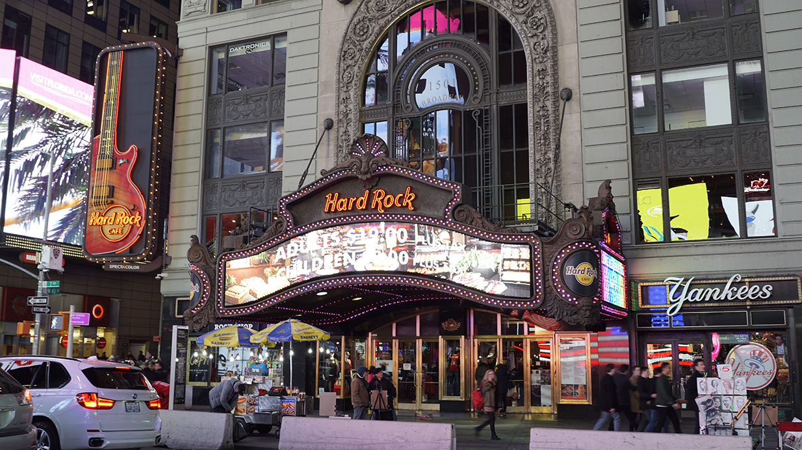
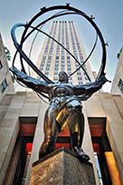
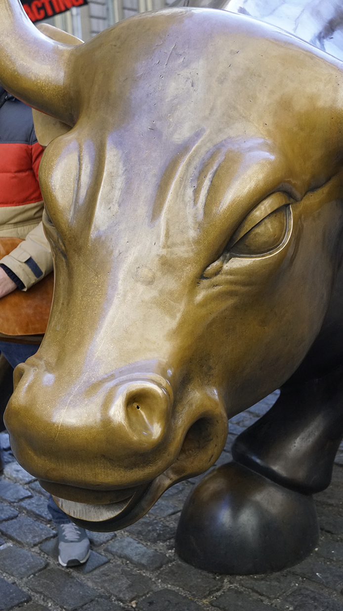
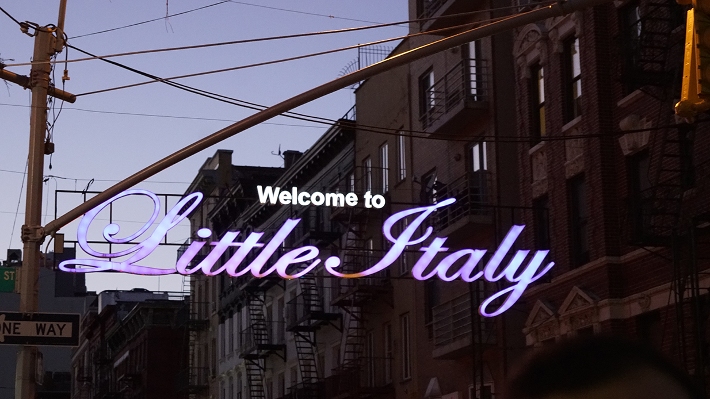

Benvinguts a la nostra web
En aquesta web, la cuitat de nova york es divideix en trece zones, dotze de las cuals es troven en Manhattan. L’ultima abarca quitare districtes més: Bronx, Queens, Brooklyn i Staten Island. Pots accedir a nova york per tres aeroports diferents: Newark, John F. Kennedy, La Guardia. Newark i J.F. Kennedy son per a vols internacionals i La Guardia per a vols nacionals.
Les millors destinacións
Aquest gratacels estil art déco es un dels simbols de la ciutat. Desde el mirador de la planta 86 pots tindre una vista inovildable de la ciutat.
En els seus edificis es reconstrueixen els avatars del inmigrants que van arribar a Nova York al llarg dels anys, i que van contribuir a conventirla en la ciutat multiétnica actual.
Una explosio de neón ilumina Broadway i Times Square, on n’hi ha mes de cuaranta tatres en els que es representen espectacles de primera categoria
Auténtica meravella urbana en ple epicentre de la ciutat. Dins de l’edifici trobarem jardins, restaurants, una galería comercial subterranea, espai per oficines, pistas de patinatge i mes de cen obres d’art.
Altres destinacións interesants

Hard Rock Cafe

Atlas Rockefeller

Wall Street
